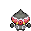

Pokédex / #344

Claydol #344
GroundPsychic
An ancient clay figurine that came to life as a Pokémon from exposure to a mysterious ray of light.
Generation 3 · Hoenn

Stats
| Attack | 70 | |
|---|---|---|
| Defense | 105 | |
| Sp. Atk | 70 | |
| Sp. Def | 120 |
In the wild
| Wild level | 40–50 |
|---|---|
| HP | 60 |
| Experience | 10 |
| Egg groups | Mineral |
Evolution
- Evolves from Baltoy at level 30.
Moves
| Level | Move | Type | Category | Power | Energy | Cooldown | Effect | |
|---|---|---|---|---|---|---|---|---|
| 1 | Tackle | Normal | Physical | 15 | 15 | 1s | Tackle is one of the most common and basic moves a Pokemon learns. It deals damage with no additional effects. | |
| 5 | Rapid Spin | Normal | Physical | 4 | 70 | 15s | Rapid Spin deals a small amount of damage and removes the effects of several 'trap' moves. | |
| 10 | Mud-Slap | Ground | Special | 20 | 30 | 10s | Mud-Slap deals damage and lowers the target's Accuracy by one stage. | |
| 15 | Confusion | Psychic | Special | 50 | 60 | 12s | Confusion deals damage and has a 10% chance of confusing the target. | |
| 20 | Psybeam | Psychic | Special | 65 | 70 | 16s | Psybeam deals damage and has a 10% chance of confusing the target. | |
| 25 | Earth Power | Ground | Special | 9 | 100 | 21s | Earth Power deals damage and has a 10% chance of lowering the target's Special Defense by one stage. | |
| 35 | Heal Block | Psychic | Status | – | 100 | 90s | Heal Block restricts the targets from healing in certain ways for five turns. | |
| 40 | Rock Tomb | Rock | Physical | 60 | 70 | 13s | Rock Tomb does damage and lowers the opponent's speed one stage. | |
| 45 | Extrasensory | Psychic | Special | 80 | 95 | 18s | Extrasensory inflicts damage and has a 10% chance of causing the target to flinch. | |
| 50 | Ancient Power | Rock | Special | 60 | 70 | 14s | Ancient Power inflicts damage and has a 10% chance of raising all of the user's stats by one stage. | |
| 55 | Psyshock | Psychic | Special | 80 | 85 | 12s | The user materializes an odd psychic wave to attack the target. This attack does physical damage. | |
| 60 | Hyper Beam | Normal | Special | 150 | 160 | 34s | Hyper Beam deals damage but the user can't attack on the next turn. | |
| 65 | Explosion | Normal | Physical | 250 | 100 | 180s | Explosion deals high damage, but causes the user to faint. |
Field abilities
FlashStrengthRock SmashBlinkTeleport
Special abilities
Levitate
Egg moves
None
Technical machines
Calm MindDouble TeamDream EaterEarthquakeExplosionHyper BeamIce BeamLight ScreenProtectPsychicRain DanceReflectRestRock SlideRock TombSafeguardSandstormShadow BallSolar BeamSubstituteToxic
Drops
| Item | Amount | Chance | |
|---|---|---|---|
| sandbag | 1 | 29.2% | |
| horn | 1 | 23.3% | |
| shadow rock | 1 | 12.5% | |
| cutting fang | 1 | 7% | |
| heavy stone | 1 | 7% | |
| rare sandbag | 1 | 5% | |
| clay lump | 1 | 5% | |
| grey-blue powder | 1 | 4.38% | |
| astral glyph | 1 | 3.5% | |
| plasmatic lightning | 1 | 3.5% | |
| claydol doll | 1 | 0.1% | |
| Earth Plate | 1 | 0.05% | |
| Mind Plate | 1 | 0.05% | |
| held soft sand | 1 | 0.01% | |
| held twisted spoon | 1 | 0.01% | |
| TM 59 | 1 | 0.01% |